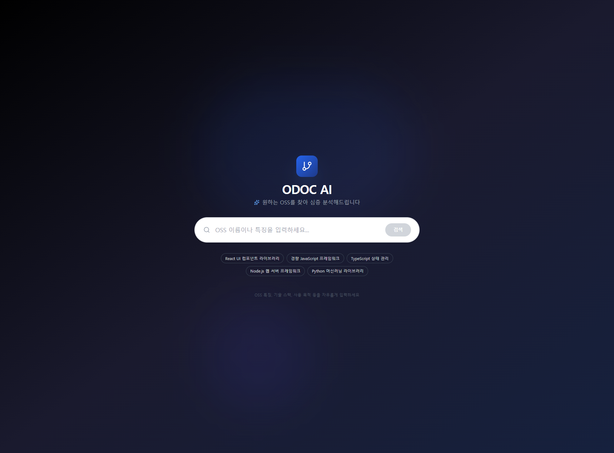
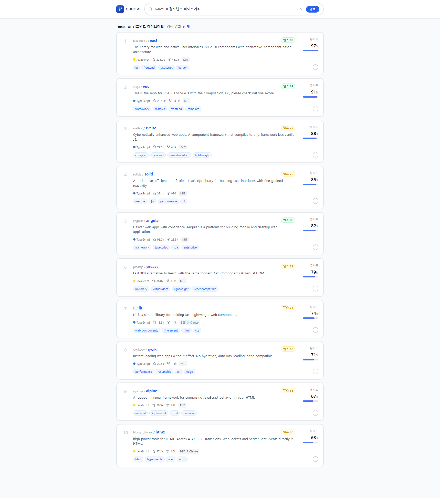

고객 탐색과 서비스 방향 전환
TeX-Corps
오픈소스 후보를 비교하고,
먼저 시험할 대상을 고르도록 돕는 서비스
창업 탐색 프로그램 TeX-Corps에서 팀원들과 개발하고 있는 SaaS입니다. 국내외 고객·멘토 탐색을 바탕으로, 터미널 작업 흐름에 후보 비교·시험 지원을 연결하고 있습니다.
맡은 일
Entrepreneurial Lead(EL)로 국내·미국 고객·멘토 탐색, 팀의 서비스 방향 논의와 SaaS 개발을 맡고 있습니다.
별도 플랫폼의 점수·정보 설명에서, 터미널의 후보 비교·시험 지원으로 제공 방식을 조정하고 있습니다.
SaaS·터미널 연동 개발 중이며, 업무 효과·지불의사는 검증 전입니다.
동료와 나눈 범위 · 보안·라이선스 분석은 동료가 담당합니다.
서비스의 현재 방향
개발자가 쓰던 흐름 안에서의 지원

01 · 국내에서 세운 가정
온보딩 지원이 필요하리라는 처음의 가정
국내 인터뷰에서는 README·라이선스 확인과 사용법 이해가 어렵다는 말을 들었습니다. 일부 스타트업에서는 라이선스 검토가 늦어지는 문제도 있었습니다.
그래서 미국에서도 오픈소스 이해와 사용을 돕는 온보딩이 필요하리라 예상했습니다.
국내 기초교육 단계의 팀 웹 프리토타입


표시 수치는 예시입니다. 현재 개발 중인 터미널 SaaS와 구분한 이전 팀 웹 프리토타입입니다.
02 · 7월 미국 고객 탐색
핵심 문제가 아니었던 예상 장벽
미국에서 만난 개발자에게 문서 읽기는 핵심 장벽이 아니었습니다. 현지 멘토들도 점수·정보 제공이 실제로 어떤 도움이 되는지, 왜 별도 서비스가 필요한지 물었습니다.
인터뷰 대상과 질문 조정
팀은 최근 6개월 안에 오픈소스를 선택·거절·교체한 경험이 있는 참여자를 우선했습니다. 질문은 실제 프로젝트 한 건의 비교·시험 과정으로 좁혔습니다.
한 현업 개발자와의 인터뷰에서는 AI로 후보 선택과 시험도 쉬워지고 있다는 변화를 체감했습니다. 개발자가 이미 할 수 있는 일을 다시 제공하기보다, 익숙한 터미널 작업 안에 어떤 도움을 더할지 살폈습니다.
03 · 현재 시도
정보 설명에서 후보 비교·시험 지원으로 바꾼 방향
배포를 목표로 팀원들과 SaaS를 개발하고 있습니다. 목적에 맞는 후보를 비교하고 먼저 시험할 대상을 정한 뒤, 다음 시험으로 이어지는 흐름을 만들고 있습니다.
창업 피칭과 오픈소스 세미나에 참여하며 국내 동향도 살피고 있습니다.
관찰은 만난 참여자와 멘토의 반응에 한정합니다. SaaS·터미널 연동은 개발 중이며, 업무 효과·시간 단축·지불의사는 검증 전입니다. 최종 호환성은 개발자의 실제 환경에서 확인해야 합니다.
방향 변화의 시점과 발표자료
- 2026.06.22
보고서만으로 고객 환경의 최종 호환성을 보장하기 어렵다고 보고, 후보 사전 선별·시험 우선순위로 범위를 조정했습니다.
- 2026.07
미국 고객·멘토의 반응을 통해 기존 문서·AI 도구에 더할 가치를 재검토했습니다.
- 2026.07.22
작업 환경 안에서 후보를 비교하고 다음 시험을 제안하는 방향을 발표했습니다.
후속 고객은 OSS 도입을 판단하는 Tech Lead·Senior Engineer 등을 가정했으며, 실제 구매자는 확인이 필요합니다.
발표자료의 사업모델·고객퍼널·비용 구조는 당시의 가설·예상치입니다.
- 2026.07.22 발표자료 PDF · 발표자 신혜리 · 13쪽
5쪽 전후 비교, 13쪽 Keep/Change/Test Next
- 해외교육 2차 발표자료 PDF · 발표자 신혜리 · 7쪽
2–3쪽 인터뷰 방법